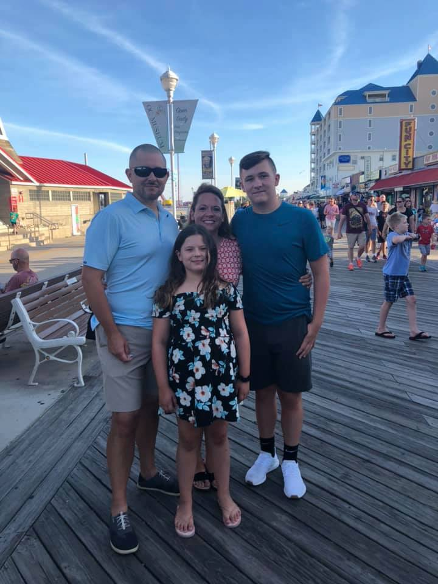

About One Community Church
One Community Church started as a mission in October of 2005 as Harvest Valley Community Church (HVCC). Our purpose was to reach not only the youth of Southern Indiana but their parents as well. As we began to grow we moved to GRC Elementary school.
The following summer we moved to neighboring Clarksville Elementary school. In March of 2011, we began a new era at HVCC. We added two additional pastors to our staff to focus on the needs of the adults and young adults. In the fall of 2013 we began sharing space with Charity Community Church.
We officially merged in the Spring of 2014 with Charity Community Church to form One Community Church at 1810 Blackiston Mill Rd. in Clarksville. God has truly blessed us in so many ways and we are very excited for the future.

Our Services
Sunday Services
@ 9:45am: Small Groups for All Ages!
@ 11:00am: Worship Services for All Ages!
During our Worship Services, there are Nursery(0-5yr) and Children's Aged (5-11yr) Services as well!
Wednesday Services
@ 6:30pm: Worship Services for All Ages!
During our Worship Services, there are Nursery(0-5yr) Services as well!
@ 7:00pm: Small Groups for ALl Ages!
Meet the Pastors of One Community Church
Andy Bramer
Student & Family Pastor
My name is Andy Bramer I am the Student and Family Pastor of One Community Church. I have been working with students and their families for over 20 years. My wife (Ann Marie) and I, have been blessed with 2 awesome sons, Jon and Matt, who are now both married. Jon and his wife, Emily have blessed us with 3 beautiful grandkids (Annabelle, JR and Oliver. Matt and his wife Sandy just blessed us with our 4th grandchild, Everett. They are also a part of our worship team at OCC. I came to know Christ when I was 12 years old while attending a local church. I struggled in my walk with Christ while I was in middle and high school. By the time I was realized it was time to quite running. I responded to God’s call into full time youth ministry at the age of 25 and have never looked back. I love working with and ministering to students and their families. One of the ways I am able to do that is through Campus Life & the Fellowship of Christian Athletes that meet weekly at Clarksville Middle & High School. I love the local church and would be glad to talk with you about any questions you might have. Don’t hesitate to call or text me at 502-693-7090 or email me at andy@ onecommunity.church.
Brion Rector
Adult Pastor
My name is Brion Rector. I am also one of the associate pastors. One of my roles includes leading our adults. My wife Hope and I have been married since the summer of 2009. On May the 16th 2014 we welcomed our daughter Grace Anne Rector into the world. After much prayer, thought and discussion I felt God was calling my wife and I not only to this church but also to this position. The Lord came into my life in 1998 and life has been a roller coaster ride, full of highs, lows and a few surprise turns ever since. Since God has become the center of my life, I have seen His plan and purpose for my life. I will continue to focus on what God wants in my life and marriage and let God lead me where He needs me to go. We love it here at One Community Church. I have been involved in various aspects of ministry over the last 12 years in churches primarily located in Southern Indiana. Youth ministry was my primary calling but have recently felt God calling me into the role of adult pastor. I look forward to meeting you and hearing what God is doing in your life. Please don’t hesitate to call or email me if you have any questions. 812-406-8021 or brionrector@onecommunity.church or on twitter @brionrector
Daniel Tatum
Young Adult Pastor

My name is Daniel Tatum. I am one the associate pastors, besides alternating preaching on Sundays I also lead one of the adult life groups. I have been married to my lovely wife Wendi since 2004. We have been blessed with two children, Saul and Josie. My walk with God started with the seed my mother planted while dragging me to church and Sunday school every week when I was a kid. I gave my life to Christ when I was 13, but I really started building a stronger relationship with him when I met Wendi. We started attending church together and in 2006 our path led us to Harvest Valley (now One Community). We quickly felt like we had found a church family instead of just a church. God has steadily led us to take on more responsibility in the church. Wendi is active in her role in working with the students while I also lead the tech team. My passion is teaching and I hope to make learning to walk with God a simple and easy to understand concept. God has called me to outreach and I also feel very strong about helping the young men in our church develop into good Christian men as they grow older. We would be glad to see you and your family join us in worshiping and serving God. You can reach me at 606-224-0014 or email me at daniel@ onecommunity.church.
What to Expect
What to Expect on Your First Visit?
After arriving and finding the perfect parking spot, enter at one of our two main entrances! Feel free to enjoy some of the snacks or drinks that are always available before every service.
What To Wear?
Our dress is casual and comfortable. Jeans, khakis, or even shorts are fine! It is a matter of the heart that we are concerned with.
But the Lord said to Samuel, “Do not look on his appearance or on the height of his stature because I have rejected him. For the Lord sees not as man sees: man looks on the outward appearance, but the Lord looks on the heart.” 1 Samuel 16:7 (ESV)
What Type of Music?
We believe that God loves music and so do we! We have been beyond blessed to have several God gifted musicians and singers lead us on a weekly basis! We combine a mix of contemporary worship songs while trying not to forget some of the classic hymns.
Oh come, let us sing to the Lord; let us make a joyful noise to the rock of our salvation! Psalm 95:1 (ESV)
Have Kids?
We love children, please bring them! We have a nursery and a great children's program available during every service! They will be well taken care of, and learn something in the process.
Train up a child in the way he should go: even when he is old he will not depart from it. Proverbs 22:6 (ESV)
Our Ministries
Adults
At vero eos et accusamus et iusto odio dignissimos ducimus qui blanditiis praesentium voluptatum deleniti atque corrupti quos dolores et quas molestias excepturi sint occaecati cupiditate non provident, similique sunt in culpa qui officia deserunt mollitia animi, id est laborum et dolorum fuga. Et harum quidem rerum facilis est et expedita distinctio. Nam libero tempore, cum soluta nobis est eligendi optio cumque nihil impedit quo minus id quod maxime placeat facere possimus, omnis voluptas assumenda est, omnis dolor repellendus. Temporibus autem quibusdam et aut officiis debitis aut rerum necessitatibus saepe eveniet ut et voluptates repudiandae sint et molestiae non recusandae. Itaque earum rerum hic tenetur a sapiente delectus, ut aut reiciendis voluptatibus maiores alias consequatur aut perferendis doloribus asperiores repellat.
More Mature Adults
At vero eos et accusamus et iusto odio dignissimos ducimus qui blanditiis praesentium voluptatum deleniti atque corrupti quos dolores et quas molestias excepturi sint occaecati cupiditate non provident, similique sunt in culpa qui officia deserunt mollitia animi, id est laborum et dolorum fuga. Et harum quidem rerum facilis est et expedita distinctio. Nam libero tempore, cum soluta nobis est eligendi optio cumque nihil impedit quo minus id quod maxime placeat facere possimus, omnis voluptas assumenda est, omnis dolor repellendus. Temporibus autem quibusdam et aut officiis debitis aut rerum necessitatibus saepe eveniet ut et voluptates repudiandae sint et molestiae non recusandae. Itaque earum rerum hic tenetur a sapiente delectus, ut aut reiciendis voluptatibus maiores alias consequatur aut perferendis doloribus asperiores repellat.
Young Adults
At vero eos et accusamus et iusto odio dignissimos ducimus qui blanditiis praesentium voluptatum deleniti atque corrupti quos dolores et quas molestias excepturi sint occaecati cupiditate non provident, similique sunt in culpa qui officia deserunt mollitia animi, id est laborum et dolorum fuga. Et harum quidem rerum facilis est et expedita distinctio. Nam libero tempore, cum soluta nobis est eligendi optio cumque nihil impedit quo minus id quod maxime placeat facere possimus, omnis voluptas assumenda est, omnis dolor repellendus. Temporibus autem quibusdam et aut officiis debitis aut rerum necessitatibus saepe eveniet ut et voluptates repudiandae sint et molestiae non recusandae. Itaque earum rerum hic tenetur a sapiente delectus, ut aut reiciendis voluptatibus maiores alias consequatur aut perferendis doloribus asperiores repellat.
Students
At vero eos et accusamus et iusto odio dignissimos ducimus qui blanditiis praesentium voluptatum deleniti atque corrupti quos dolores et quas molestias excepturi sint occaecati cupiditate non provident, similique sunt in culpa qui officia deserunt mollitia animi, id est laborum et dolorum fuga. Et harum quidem rerum facilis est et expedita distinctio. Nam libero tempore, cum soluta nobis est eligendi optio cumque nihil impedit quo minus id quod maxime placeat facere possimus, omnis voluptas assumenda est, omnis dolor repellendus. Temporibus autem quibusdam et aut officiis debitis aut rerum necessitatibus saepe eveniet ut et voluptates repudiandae sint et molestiae non recusandae. Itaque earum rerum hic tenetur a sapiente delectus, ut aut reiciendis voluptatibus maiores alias consequatur aut perferendis doloribus asperiores repellat.
Childrens
We have an amazing children’s ministry for all kids age K-5th grade that would make you feel confident and proud to send your special blessing to church. Jesus said we should not prevent children from coming to Jesus. That is what we at One Community children’s ministry want to accomplish with every child. Bring them to class allows us to help your child become closer to Jesus. During class we retell Bible stories, do activities, crafts, songs, games and so much more to help your child understand and become closer to Jesus. Come let your child join in the fun. We cannot wait to see you there.
Nursery
At vero eos et accusamus et iusto odio dignissimos ducimus qui blanditiis praesentium voluptatum deleniti atque corrupti quos dolores et quas molestias excepturi sint occaecati cupiditate non provident, similique sunt in culpa qui officia deserunt mollitia animi, id est laborum et dolorum fuga. Et harum quidem rerum facilis est et expedita distinctio. Nam libero tempore, cum soluta nobis est eligendi optio cumque nihil impedit quo minus id quod maxime placeat facere possimus, omnis voluptas assumenda est, omnis dolor repellendus. Temporibus autem quibusdam et aut officiis debitis aut rerum necessitatibus saepe eveniet ut et voluptates repudiandae sint et molestiae non recusandae. Itaque earum rerum hic tenetur a sapiente delectus, ut aut reiciendis voluptatibus maiores alias consequatur aut perferendis doloribus asperiores repellat.
Upcoming Events
At vero eos et accusamus et iusto odio dignissimos ducimus qui blanditiis praesentium voluptatum deleniti atque corrupti quos dolores et quas molestias excepturi sint occaecati cupiditate non provident, similique sunt in culpa qui officia deserunt mollitia animi, id est laborum et dolorum fuga. Et harum quidem rerum facilis est et expedita distinctio. Nam libero tempore, cum soluta nobis est eligendi optio cumque nihil impedit quo minus id quod maxime placeat facere possimus, omnis voluptas assumenda est, omnis dolor repellendus. Temporibus autem quibusdam et aut officiis debitis aut rerum necessitatibus saepe eveniet ut et voluptates repudiandae sint et molestiae non recusandae. Itaque earum rerum hic tenetur a sapiente delectus, ut aut reiciendis voluptatibus maiores alias consequatur aut perferendis doloribus asperiores repellat.
Our Facilities
Family Life Center

Our Family Life Center, we use this for all kinds of activites! From showing our movie nights to youth playing basketball.
Fellowship Hall

Our Fellowship Hall, we use this for our church dinners. This is where we also gather before our services. This would be a great place for a baby shower or a meeting (PA System available upon request)!
Sanctuary

For your wedding needs we have a nice sanctuary that offers plenty of space for your family! We have dual screens and a state of the art sound system for all your audio and video needs.